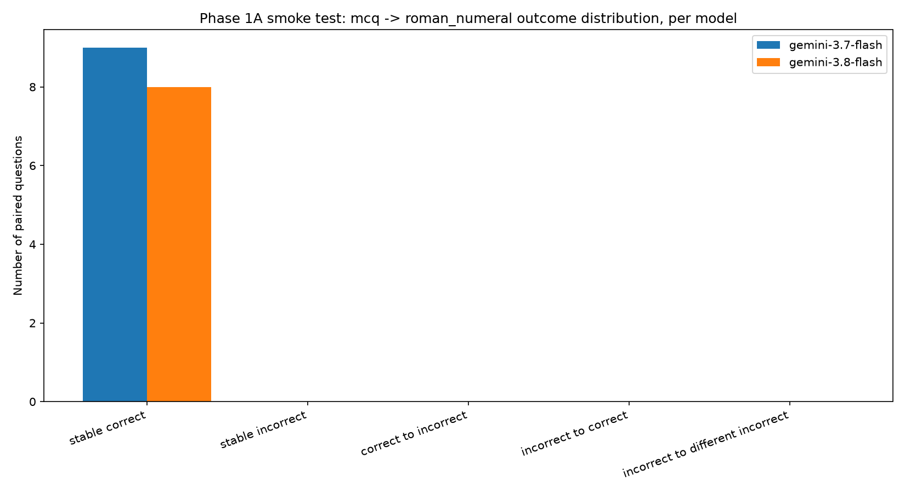

10 fixed pilot-cohort questions × 2 conditions × 3 models, scored in a canonical answer-index space (never comparing letters to roman numerals as strings). One sample call per model was verified before the batch ran. Total cost: under a cent.
mcq's A/B/C/D and roman_numeral's I/II/III/IV are both mapped to an option index 0–3 before any comparison. Option ordering and content-per-position were assertion-checked against all 10 pilot items before a single API call was made.
results/behavioral/raw/
and .env confirmed gitignored.
A 20-token budget produced empty responses (finish_reason: MAX_TOKENS,
parts: null) — both models spent thoughts_token_count
(17–52 observed) on hidden reasoning even with thinking_budget=0 explicitly
requested. This floor cannot be fully disabled for these models. Fixed by raising
max_output_tokens to 200 (still trivial cost) rather than assuming
thinking could be suppressed to zero.
~ (invert) bug silently corrupted ReCon
~ on an object-dtype pandas Series holding numpy.bool_
values mixed with None does not reliably behave as logical NOT —
confirmed directly: an all-False column inverted to a mean of
0.11 instead of the correct 1.0. Every metric
computed with ~ on these columns was wrong until replaced with explicit
== True / == False comparisons. Caught by manual
sanity-checking the metrics against the raw pairs table before trusting the output.
One parsing failure's raw response was the literal text
"Here is the JSON requested" — Gemini 3.8 Flash started a conversational
preamble instead of emitting the constrained JSON object, then hit the token cap before finishing.
Correctly recorded as parsing_status=unparseable, never guessed at — this is
real model behavior worth knowing about before scaling, not a pipeline defect.
n=10 per model (9 and 8 with both conditions parsed, respectively) — pipeline validation only, not statistically powered. Full table: results/behavioral/phase1a/phase1a_metrics.csv.
| Model | Calls | Parse fail rate | Baseline acc. | Perturbed acc. | Δ accuracy | Flip rate | ReAcc | ReCon |
|---|---|---|---|---|---|---|---|---|
| gemini-3.7-flash | 20 | 5% | 100% | 100% | 0 | 0% | 1.00 | 1.00 |
| gemini-3.8-flash | 20 | 10% | 100% | 100% | 0 | 0% | 1.00 | 1.00 |
| claude-haiku-4-5-20251001 | 0 | blocked — Anthropic account usage cap, resets 2026-10-01 00:00 UTC | ||||||

stable_correct — zero flips of any kind observed.
A real finding at this sample size, not yet a claim about the full 200-question cohort.
results/behavioral/phase1a/ (5 files) and
figures/behavioral/phase1a_outcome_distribution.png.
NOT fully ready to scale as-is: 2 of 3 requested models passed. Gemini 3.7/3.8 Flash's pipeline is validated end-to-end (prompting, canonical parsing, caching, restart-safety, structured output). Claude needs the account cap to clear before its half can even be smoke-tested.